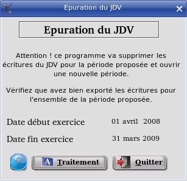

~ Comptabilité et Facturation Laurux ~ |
||
Ce programme est accessible pour ceux qui n'ont pas activé la comptabilité.
Il
s'agit en quelque sorte d'une clotûre annuelle à lancer le premier jour
du nouvel exercice. Ex: Si votre exercice commence au 01.04.2008 et se
termine au 31.03.2009 alors il faudra lancer ce programme le 01.04.2009
sinon vous ne pourrez pas imprimer de facture.

Comment procéder ?
D'abord faites une sauvegarde de votre base. Ensuite, si vous effectuez l'export des écritures de ventes vers une autre comptabilité, vérifiez que cet export a bien été fait car le programme va effacer toutes les écritures de l'exercice mentionné. Si tout est correct, lancez le traitement en cliquant sur le bouton "Traitement"
----------------------------------------------------------------------------------------------------------------------